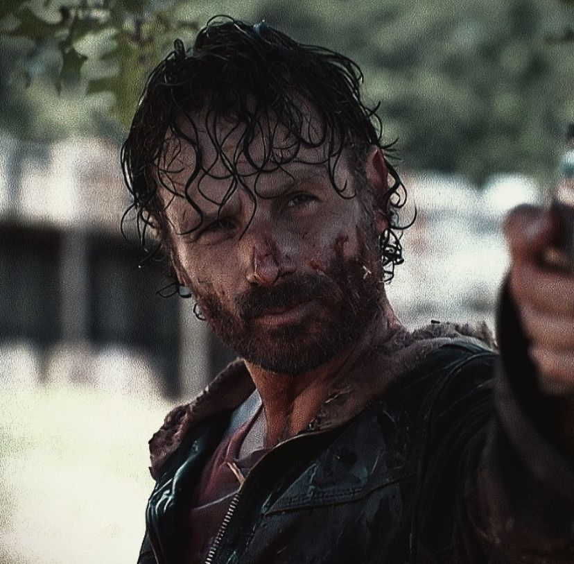
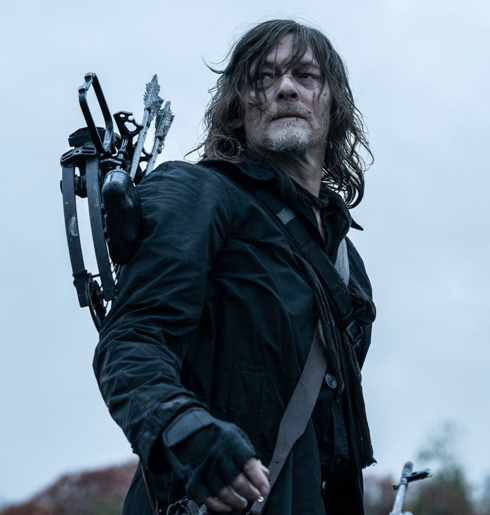
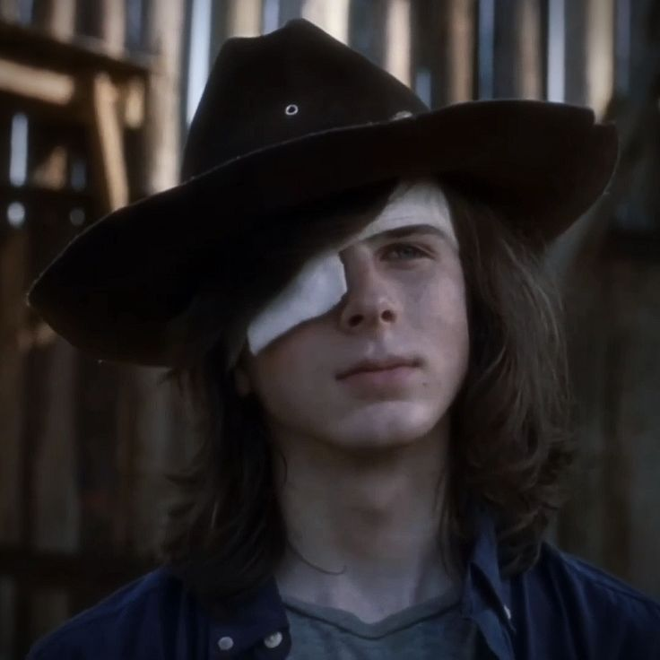
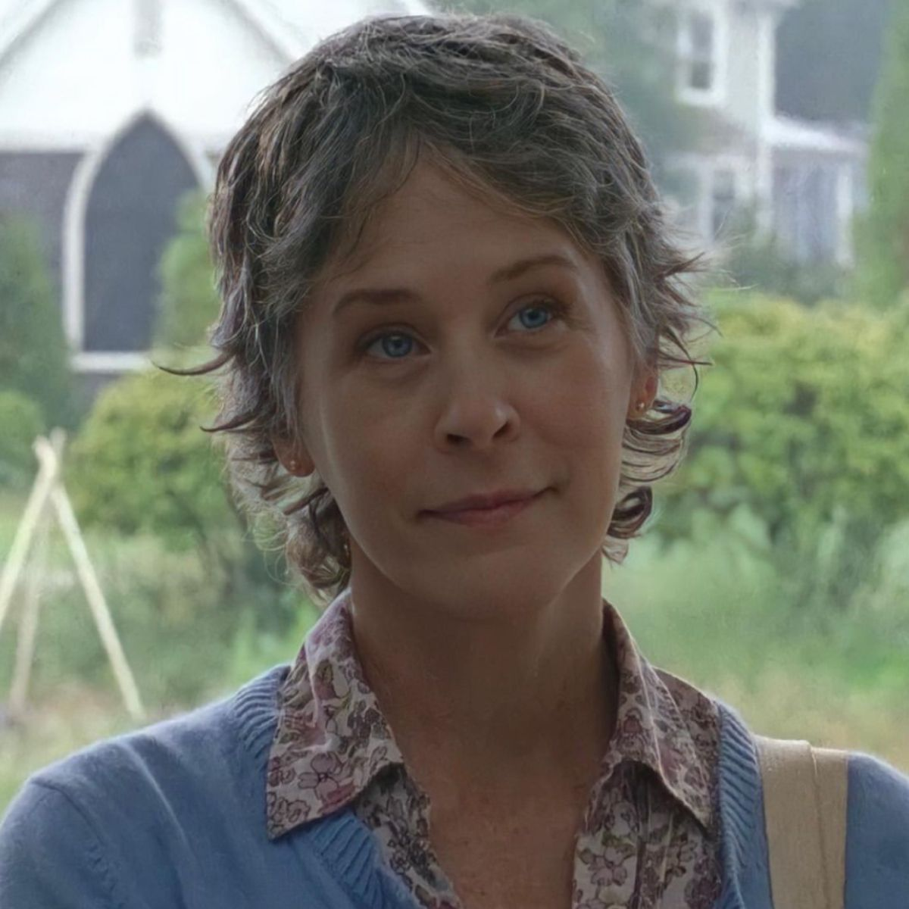
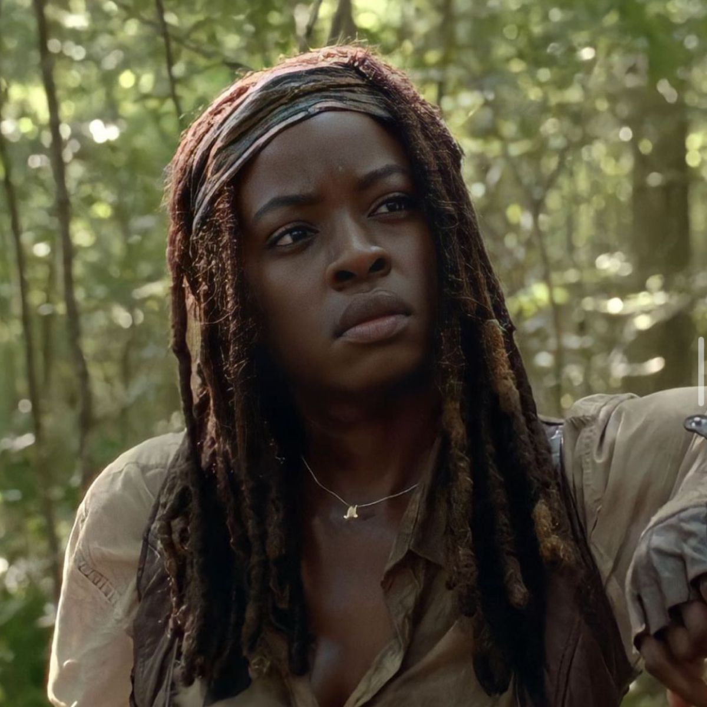
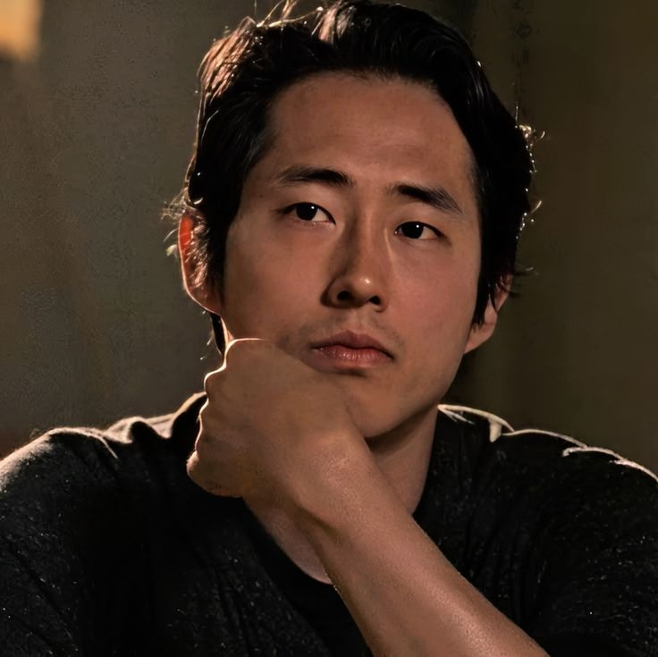
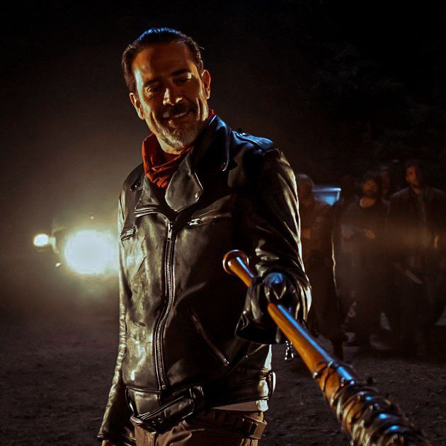

Rick Grimes
Rick Grimes é o protagonista de The Walking Dead, um ex-xerife que acorda em um apocalipse zumbi. Ele se torna um líder determinado, fazendo escolhas difíceis para proteger seu grupo e sobreviver em um mundo sem leis.

Daryl Dixon
Daryl Dixon é um dos principais personagens, ele começa como um caçador solitário e desconfiado, mas evolui para um membro leal e corajoso do grupo, conhecido por sua habilidade com a besta e forte instinto de sobrevivência.

Carl Grimes
Carl Grimes é filho de Rick Grimes, ele cresce durante a série, passando de criança inocente para um jovem forte e maduro, que aprende a lutar e a sobreviver enquanto tenta manter sua humanidade.

Carol Peletier
Carol Peletier é uma personagem que começa como uma mulher frágil e submissa, mas se transforma em uma das sobreviventes mais fortes e estratégicas do grupo. Ao longo da história, ela se torna extremamente habilidosa em combate e sobrevivência, muitas vezes tomando decisões duras para proteger quem ama.

Maggie Greene
Maggie Greene é uma personagem que começa como uma jovem fazendeira e, ao longo da série, se torna uma líder forte e determinada. Após várias perdas pessoais, ela desenvolve grande habilidade de sobrevivência e liderança, sempre lutando para proteger seu grupo e construir um futuro melhor.
Michonne
Michonne é uma personagem conhecida por sua habilidade com a katana e forte instinto de sobrevivência. Ela começa como uma sobrevivente solitária e misteriosa, mas depois se junta ao grupo de Rick e se torna uma das principais líderes, valorizando proteção, justiça e família.

Glenn Rhee
Glenn Rhee é um personagem que começa como entregador e rapidamente se torna um dos sobreviventes mais corajosos e inteligentes do grupo. Ele é conhecido por sua agilidade, bom coração e lealdade, sempre arriscando a própria vida para ajudar os outros.

Negan Smith
Negan é um personagem muito conhecido por ser um dos vilões mais marcantes da série. Líder dos Salvadores, ele é cruel, carismático e usa o medo para controlar outros grupos, especialmente com seu bastão “Lucille”. Com o tempo, o personagem passa por mudanças e mostra lados mais humanos e complexos.
